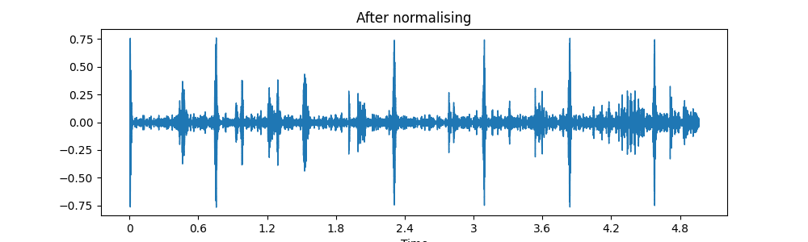
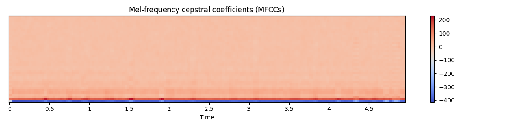

Normalised normal
Making plot between -1 to 1 for ease of analysis using librosa module

Normal Original file
Using scipy.signal analyse the original audio and plot according to the amplitude

MFCCs
Mel-frequency cepstral coefficients that collectively make up MFC. They are derived from a type of cepstral representation of the audio clip.The MFCC feature extraction includes windowing the signal,applying DFT,taking log of magnitude,then warping the frequencies on Mel scale,then by applying the inverse DCT.